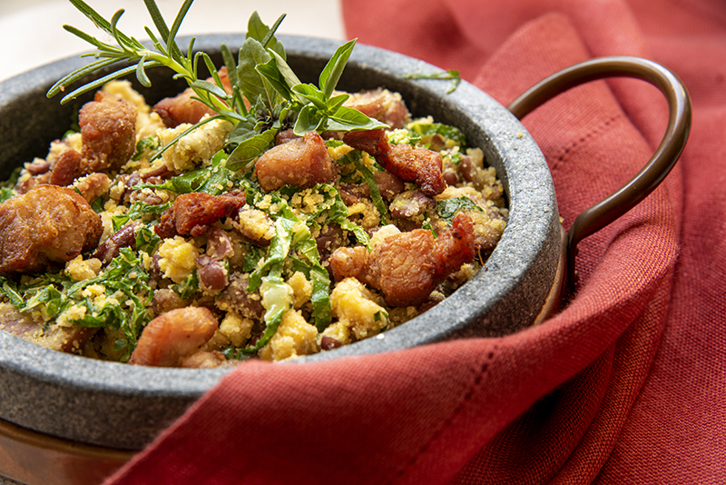

Feijão tropeiro

•
O feijão tropeiro é um prato típico da culinária brasileira, especialmente da região de Minas Gerais.
É composto principalmente por feijão cozido misturado com farinha de mandioca, linguiça, bacon, ovos e temperos diversos.
É uma refeição consistente e saborosa, com uma combinação de ingredientes que proporcionam uma variedade de sabores e texturas.
Informação Nutricional
(valores aproximados por porção):
Calorias: Varia entre 300 a 400 kcal, dependendo do tamanho da porção e dos ingredientes utilizados.
Carboidratos: Aproximadamente 30g
Proteínas: Aproximadamente 15g
Gorduras: Aproximadamente 20g
Fibras: Aproximadamente 5g
Vitaminas e Minerais: O feijão tropeiro é uma boa fonte de proteínas, fibras, ferro e outros nutrientes essenciais.
R$30,00 | Prato feito
« Voltar ao menu